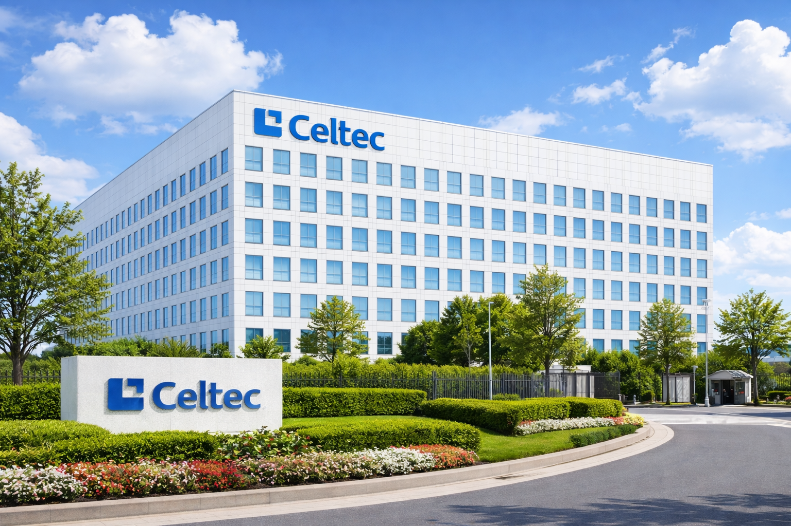

About Us
At Celtec, we believe games are more than just entertainment they are experiences that bring people together, spark imagination, and inspire learning. As an independent game studio based in North Wales, UK, our goal is to create original games that leave a lasting impression on players of all ages.
Our studio was built on a simple idea: combine creativity with technology to make something meaningful. From early concepts to final release, every game we develop is shaped by passion, collaboration, and attention to detail. We take pride in crafting experiences that are not only fun to play, but also memorable and impactful.
The team at Celtec is made up of talented developers, artists, and designers who share a common vision. We value creativity, innovation, and teamwork, and we encourage everyone to contribute ideas and push boundaries. This open and supportive culture allows us to grow, experiment, and continuously improve the games we create.
Working across multiple platforms including mobile, desktop, and consoles has given us the opportunity to reach a wide and diverse audience. Whether someone is playing on their phone, PC, or console, our aim is always the same, to deliver a high quality, engaging experience.
As we continue to grow, we remain committed to our core values, creativity, passion, and innovation. These principles guide everything we do and help shape the future of Celtec as we continue our journey in the games industry.
Our Location
We are located in North Wales, UK.
